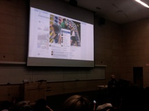

The view from here.
Saturday, October 15, 2011
Hey hey!
So life in Toronto, week 3... complete. It has been filled with excitement, learning, and amazing people. I unfortunately can’t talk too much about the work I have been doing at BBDO yet, as I need to have an approval signed on the outline of what I would like to say. Haha and that my friends is why you ALWAYS read your policy and procedures manual at work even though it is a monster size!!! But I can share some of my insight and stories of the week and what its like living here in Toronto!
So I am staying at a wicked place right by Bathurst and Queen effectively right beside the heart of downtown. Its a small, neon green room, with squeaky floors, a brown hard bed, beside a loud and busy street... and I absolutely love it. I have been taking the street car and subway to work everyday and I am officially a pro at public transportation now. People ask ME for directions and where they are going!!!! That is amazing considering my history with public transit in Calgary....
Anyway, Its been alot of fun so far, work is great and I have been meeting different people in the Toronto area which is nice to make friends. On my first day here, It was 30 degrees out and I got to figure out the Toronto Transit system....it is so much better than Calgary. I walked around downtown and visited a few of the spots the SIFE Mount Royal team and I visited last time I was here in May for our National competition :) (I miss seeing you guys everyday. Hop e you’re rocking new projects and doing well at school!).
e you’re rocking new projects and doing well at school!).
I am working on Bloor Street... which is the expensive shopping and top business district in the downtown core. I really like the area and the trip to work every morning. I walk with my backpack... covered in pins and rock it to work everyday (mainly because I forgot to pack a purse..) but people always look at me on the train and smile. I am not sure if that is because they assume I am a 12 years old... or if they feel bad that for me that I don’t look like I have friends. lol who knows! :)
On night three of being here, one of my mentors told me to check out an event called “Democamp” that a really rad guy named David Crowe puts on. Its a event that has IT start ups come and pitch their ideas to investors. It was at Ryerson University and my gosh, it is an amazing campus there, I love MRU and suggest that everyone goes there.. but if I plan on getting a second degree.... Anyway, I got to listen to 4 groups of students pitch the startups they developed. It is amazing to see what people are capable of... I mean, these guys were no older than 28 years old and they have businesses that have investment from YouTube, Microsoft... and their ideas will change the way we use the computer in the future! Its crazy!! I got to sit beside a leading guy from VISA who secretly aspires to be an IT start up guy. He was really nice, I told him about my project and he thought it was cool that I was following my dreams, he said he was motivated to do the same :)
At the event, they had a guy from Facebook as the keynote speaker

and he showed some REALLY AWESOME new things that facebook is working on... (Timeline and an enhanced “Like” button!!! so rad.) But after the event, I was standing awkwardly at the door just staring at him... deciding if I should say hi or something.... He looked at me and was like “hey, what kind of start up do you have...” and you know me......... “Awkward Alice” I started talking really fast and not really making any sense.. I told him his presentation was great and that I was my own IT start up. He looked at me a bit weird so I explained “oh yea, It’s pretty random... I am interning in 10 jobs in 112 days across North America and documenting the whole thing because I just graduated....”. There was this silence for about 20 seconds and then he burst out laughing.....
I kind of stood there....... not knowing what to say and his response was “I have never heard anything like this before ever!!” He then looked at someone beside us and was like “Have you heard this girls story!?” and the dude was like.. “ya! pretty crazy hey!”.. at this point.... I was smiling and more relaxed so I could share more about the project. I told him it was my own entrepreneurial project and I had the support of amazing friends and family to get it off the ground and it just keeps growing! He told me that he really liked the idea and wanted to be a part of it. So he gave me his contact info and said “Maeghan, I don’t say this ever.... but please get in touch with me. I really want to help you out”.
So I messaged him! And its official, I am going to Facebook Head Quarters in two weeks :) I can’t even begin to express how amazing people are. My face hurt from smiling so much and I seriously can not wait to share the experience with you guys.
I talked with Facebook guy for a bit longer after that about growing up homeschooling, my crazy obsession with fish growing up, and I told him that I had travelled quite a bit on my own but this time, it feels really different - I really feel alone. His response was something that I didn’t expect, he told me that being able to do things on your own is very important because your friends and family are not going to be around forever. Enjoy every moment you have with them, but teach yourself to be fine without them.
I laugh.. because advice I am looking for always comes when I need it. The next day I was really struggling with being on my own. I don’t know anyone in Toronto, and it has been really hard for me because when something happens that I want to share, or there is a conversation I would love to have... I can’t just call someone up or run into someone to talk about it. It really isn’t the same to share good news with people online.. (I appreciate beyond reason the responses and comments on Facebook and Twitter!! it is the only thing I have right now) but I would much rather share it in person so I can hug, thank, cry, laugh and be stoked with the people I love having in my life. This is just something I didn’t think would challenge me on this adventure.
Its a good learning experience though, it is a very different feeling. I was on my own in China, and I was just in Europe doing my own thing as well.... Heck, my parents said they have talked to me more in the last 2 weeks then they have in the last two years of being in school! I am totally use to being on my own, alone... all the time. But thinking back on Facebook guy’s comments, the experience of choosing to be fine and always moving forward was what I needed to hear. I stopped dwelling on all the sad thoughts and started thinking of good ones. It also opened a new perspective to what I really value, and how much I appreciate the people I have in my life. I am grateful for that.
So I have created more work for myself, as always, and I am really happy. I choose to be because I have so many reasons to smile every day, jam out to music on the train, and be thankful for learning so much every day. I have a family who loves me, and I know that even if I have a “bad day”, I will remember this adventure for the rest of my life. And that thought alone with worth smiling and being happy for :)
So the most important thing I learned this week maybe outside of work is not be afraid to share your story, and definitely don’t overlook or judge the story of others. You would be surprised of the opportunity to help people and be a part of something really influential when you take the time to not find the bad in people, but to find and share the good.
I remember thinking one day “how cool would it be to go to facebook..” and today, I can say I actually am. People are amazing, and you can really do anything if you put your heart and mind to it. I know everyone says that.... alot... but curiosity is what fuels my life and it is never about how good you are, it is about how good you want to be. If you share that energy with others, it somehow..... eventually finds a way of coming true.
Thank you for reading, and for your comments, messages, texts, tweets, emails, and likes. I get so excited to hear from you, and I hope you enjoyed the post.
Much <3
Just Maeghan.